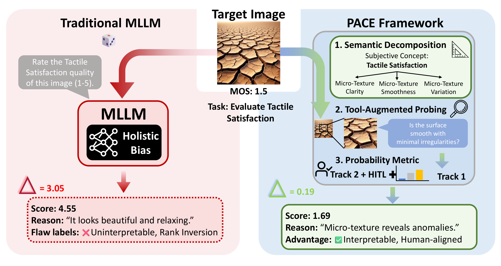
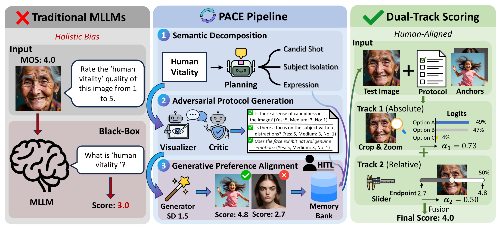
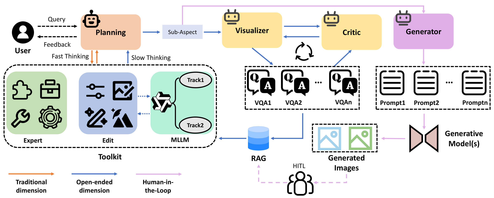
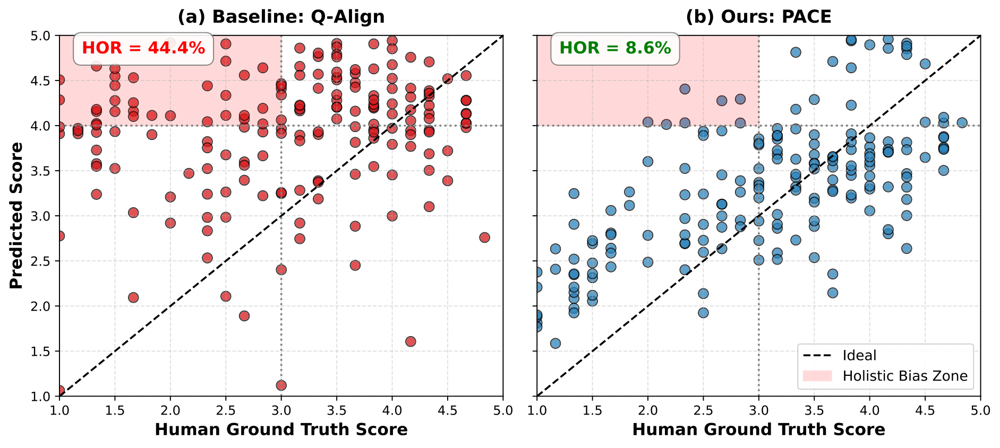
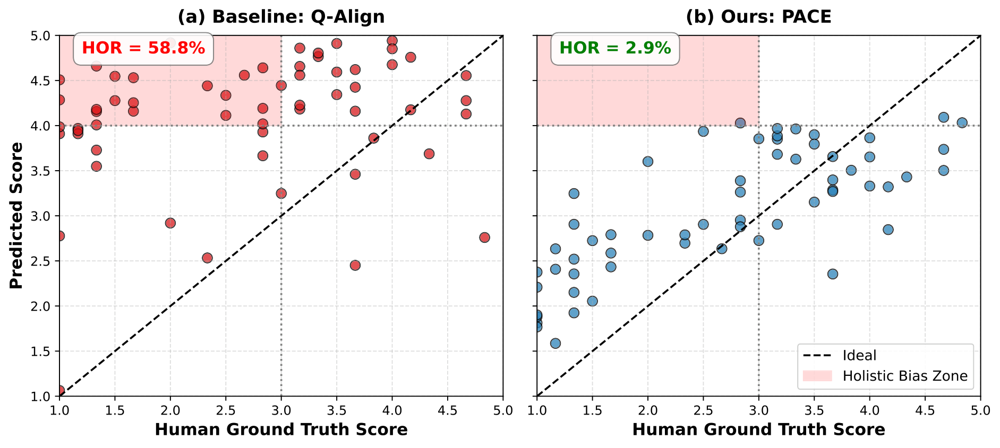
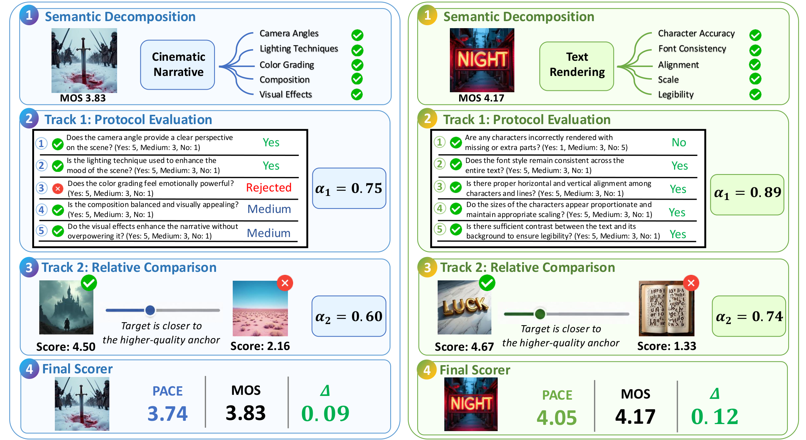

click to zoomAbstract
Generative models are rapidly expanding image quality assessment (IQA) beyond traditional fidelity factors to emerging dimensions such as physical plausibility and text-rendering correctness. However, existing IQA models rely on fixed definitions and heavy supervision, making them difficult to extend to open-ended perceptual dimensions. We identify holistic bias as an important limitation: when scoring an unseen dimension, models reuse generic quality priors, leading to scoring errors and rank inversion. To address this, we propose PACE (Perceptual Agentic Collaborative Evolution), a training-free multi-agent framework that formulates open-ended IQA as explicit protocol construction. Given a target dimension, PACE uses collaborative agents to construct an evaluation protocol composed of verifiable Visual Question Answering (VQA) probes, grounding evaluation in concrete visual evidence rather than holistic impressions. The resulting protocol is calibrated using only four human-annotated images per dimension, while a dual-track scoring mechanism aligns model perception with human scoring scales. Across traditional IQA, structural fidelity, context-aware aesthetics, and newly defined open-ended dimensions, PACE consistently improves its MLLM backbone, achieving competitive performance across diverse IQA settings, and reduces the Holistic Override Rate (HOR) from 44.4% to 8.6%.
Method

click to zoomFast-and-slow routing
If the target dimension is close (>0.8 cosine similarity) to a stored one, PACE reuses existing experts or evolved protocols; otherwise it triggers slow thinking and builds a new protocol from scratch.
Multi-agent protocol construction
Planning decomposes the concept into 3–5 observable sub-dimensions, the Visualizer turns them into VQA probes with score mappings, and the Critic rejects subjective, redundant or non-observable probes in up to three rounds.
One-time HITL calibration
The Generator converts the finalized protocol into positive/negative prompts and synthesizes four candidate images. Human ratings of those images define the reusable high/low anchors and the score range of the new dimension.
Dual-track continuous scoring
Track 1 aggregates logit-softmax expectations over the protocol (absolute perception, α1); Track 2 places the image relative to the anchors (relative perception, α2). Their fusion is projected onto the anchor range.
Working with logits centroids instead of emitted text keeps predictions continuous and preserves rank correlation with human MOS; crop-and-zoom probing fires automatically whenever a protocol refers to high-frequency evidence such as noise, grain or texture. Every agent shares the same MLLM backbone and differs only in system prompt and interaction context, so the gains come from role separation and interaction rather than extra model capacity.

click to zoomQuantifying holistic bias
The Holistic Override Rate (HOR) measures the fraction of images with poor human ratings on a target dimension (≤3.0) that receive incorrectly high predictions (≥4.0). Across the six open-ended dimensions, Q-Align hallucinates high scores for 36 of 81 human-low images; PACE, judging from concrete protocols instead of a general impression, cuts that number by more than five times.
Holistic Override Rate (lower is better). Fine-grained dims = tactile satisfaction & human vitality.

click to zoom
click to zoomResults
PACE is evaluated under a four-tier hierarchy: traditional fidelity benchmarks, structural and logical integrity, context-aware aesthetics, and finally zero-training-data open-ended dimensions. Everything is training-free; the default backbone is Qwen2.5-VL (7B), and the framework also improves mPLUG-Owl2.
TIER 1Traditional IQA benchmarks (PLCC / SRCC)
| Methods | KonIQ | SPAQ | KADID | LIVE-Wild | AGIQA-3K | CSIQ |
|---|---|---|---|---|---|---|
| NIQE | 0.533 / 0.530 | 0.679 / 0.664 | 0.468 / 0.405 | 0.493 / 0.449 | 0.560 / 0.533 | 0.718 / 0.628 |
| BRISQUE | 0.225 / 0.226 | 0.490 / 0.406 | 0.429 / 0.356 | 0.361 / 0.313 | 0.541 / 0.497 | 0.740 / 0.556 |
| NIMA | 0.896 / 0.859 | 0.838 / 0.856 | 0.532 / 0.535 | 0.814 / 0.771 | 0.715 / 0.654 | 0.695 / 0.649 |
| HyperIQA | 0.917 / 0.906 | 0.791 / 0.788 | 0.506 / 0.468 | 0.772 / 0.749 | 0.702 / 0.640 | 0.752 / 0.717 |
| DBCNN | 0.884 / 0.875 | 0.812 / 0.806 | 0.497 / 0.484 | 0.773 / 0.755 | 0.730 / 0.641 | 0.586 / 0.572 |
| MUSIQ | 0.924 / 0.929 | 0.868 / 0.863 | 0.575 / 0.556 | 0.789 / 0.830 | 0.722 / 0.630 | 0.771 / 0.710 |
| CLIP-IQA+ | 0.909 / 0.895 | 0.866 / 0.864 | 0.653 / 0.654 | 0.832 / 0.805 | 0.736 / 0.685 | 0.772 / 0.719 |
| Compare2Score | 0.923 / 0.910 | 0.867 / 0.860 | 0.500 / 0.453 | 0.786 / 0.772 | 0.777 / 0.671 | 0.735 / 0.705 |
| Q-Align | 0.941 / 0.940 | 0.886 / 0.887 | 0.674 / 0.684 | 0.853 / 0.860 | 0.772 / 0.735 | 0.785 / 0.737 |
| DeQA-Score | 0.953 / 0.941 | 0.895 / 0.896 | 0.694 / 0.687 | 0.892 / 0.879 | 0.809 / 0.729 | 0.787 / 0.744 |
| Q-Scorer | 0.959 / 0.948 | 0.898 / 0.898 | 0.676 / 0.671 | 0.889 / 0.870 | 0.821 / 0.736 | 0.796 / 0.746 |
| Qwen2.5-VL | 0.737 / 0.692 | 0.855 / 0.860 | 0.576 / 0.522 | 0.625 / 0.615 | 0.813 / 0.744 | 0.724 / 0.679 |
| Ours (Slow) | 0.841 / 0.783 | 0.900 / 0.893 | 0.782 / 0.776 | 0.807 / 0.760 | 0.821 / 0.758 | 0.735 / 0.697 |
| Ours (Fast) | 0.962 / 0.950 | 0.930 / 0.929 | 0.926 / 0.922 | 0.907 / 0.892 | 0.822 / 0.751 | 0.880 / 0.835 |
Tier 1. PACE (Slow) is entirely training-free and still surpasses its Qwen2.5-VL backbone on every benchmark; PACE (Fast) additionally reuses specialized experts and previously evolved protocols.
TIER 2Structural and logical integrity
| Methods | HandEval | PSNR-SR | GAN-based SR | Denoising | SR Full | PIPAL |
|---|---|---|---|---|---|---|
| CLIP-IQA | 0.403 / 0.423 | 0.382 / 0.325 | 0.359 / 0.354 | 0.325 / 0.326 | 0.250 / 0.240 | 0.315 / 0.305 |
| PickScore | 0.000 / 0.002 | 0.120 / −0.105 | 0.271 / −0.217 | 0.102 / 0.048 | 0.173 / −0.134 | 0.058 / −0.013 |
| ImageReward | 0.282 / 0.279 | 0.244 / 0.129 | 0.232 / 0.189 | 0.231 / 0.182 | 0.160 / 0.132 | 0.163 / 0.130 |
| HPSv2 | 0.010 / 0.059 | 0.275 / 0.260 | 0.351 / 0.317 | 0.250 / 0.226 | 0.144 / 0.107 | 0.189 / 0.167 |
| Q-Align | 0.521 / 0.528 | 0.438 / 0.430 | 0.515 / 0.494 | 0.426 / 0.389 | 0.407 / 0.408 | 0.403 / 0.419 |
| Qwen2.5-VL | 0.503 / 0.501 | 0.471 / 0.442 | 0.425 / 0.390 | 0.346 / 0.304 | 0.416 / 0.351 | 0.390 / 0.357 |
| Ours (Slow) | 0.572 / 0.575 | 0.607 / 0.592 | 0.536 / 0.520 | 0.442 / 0.407 | 0.496 / 0.448 | 0.493 / 0.457 |
Tier 2. Preference-oriented reward models nearly collapse on hand anatomy and restoration artifacts, while explicit protocols plus crop-and-zoom probing keep PACE's ranking aligned with human judgment.
TIER 3Context-aware aesthetics (TAD66k subsets)
| Methods | City | Nature | Sea | Yellow | Flower |
|---|---|---|---|---|---|
| CLIP-IQA | 0.210 / −0.120 | 0.152 / 0.008 | 0.217 / −0.153 | 0.054 / 0.007 | 0.120 / 0.009 |
| PickScore | 0.251 / 0.163 | 0.233 / 0.224 | 0.151 / 0.141 | 0.237 / 0.233 | 0.125 / 0.068 |
| ImageReward | 0.217 / 0.140 | 0.220 / 0.165 | 0.115 / 0.062 | 0.268 / 0.219 | 0.131 / 0.049 |
| HPSv2 | 0.259 / 0.242 | 0.152 / 0.128 | 0.195 / 0.141 | 0.213 / 0.197 | 0.031 / 0.026 |
| Q-Align | 0.304 / 0.285 | 0.118 / 0.129 | 0.170 / 0.110 | 0.228 / 0.202 | 0.157 / 0.086 |
| Qwen2.5-VL | 0.391 / 0.370 | 0.295 / 0.290 | 0.249 / 0.206 | 0.213 / 0.225 | 0.144 / 0.111 |
| Ours (Slow) | 0.438 / 0.409 | 0.327 / 0.279 | 0.278 / 0.239 | 0.293 / 0.263 | 0.169 / 0.157 |
Tier 3. Context-specific protocols — geometric perspective for city scenes, color harmony and depth-of-field for flowers — outperform a single fixed notion of aesthetics.
TIER 4Zero-training-data open-ended dimensions
| Methods | Typo | Light | Tactile | Dream | Portrait | Cine | OVERALL |
|---|---|---|---|---|---|---|---|
| CLIP-IQA | −0.142 / −0.240 | 0.128 / 0.051 | 0.095 / 0.090 | 0.430 / 0.363 | 0.423 / 0.416 | 0.624 / 0.637 | 0.260 / 0.219 |
| PickScore | −0.073 / −0.028 | 0.043 / 0.015 | 0.008 / −0.002 | 0.675 / 0.595 | 0.225 / 0.159 | 0.611 / 0.649 | 0.248 / 0.231 |
| ImageReward | −0.104 / −0.176 | −0.462 / −0.205 | 0.071 / 0.116 | 0.746 / 0.661 | −0.294 / −0.216 | 0.736 / 0.714 | 0.115 / 0.149 |
| HPSv2 | −0.013 / 0.062 | −0.257 / −0.161 | 0.388 / 0.437 | 0.697 / 0.725 | −0.010 / −0.038 | 0.617 / 0.609 | 0.237 / 0.272 |
| Q-Align | 0.461 / 0.608 | −0.187 / −0.211 | 0.312 / 0.386 | 0.009 / 0.155 | −0.058 / 0.125 | 0.487 / 0.519 | 0.170 / 0.264 |
| Qwen2.5-VL | 0.339 / 0.480 | −0.088 / −0.057 | 0.604 / 0.644 | 0.874 / 0.758 | 0.535 / 0.468 | 0.694 / 0.710 | 0.493 / 0.501 |
| Ours (Slow) | 0.684 / 0.673 | 0.348 / 0.204 | 0.838 / 0.796 | 0.849 / 0.785 | 0.806 / 0.790 | 0.759 / 0.745 | 0.714 / 0.666 |
Tier 4. Most baselines show polarity inversion (negative SRCC) because generic quality priors override dimension-specific reasoning. PACE keeps continuous, human-aligned scoring on all six unseen dimensions.
Ablations & backbone generalization
Both scoring tracks help, and their balanced fusion (ω1 = ω2 = 0.5) is the most stable across benchmarks — 0.900 PLCC on SPAQ. Removing protocol construction hurts clearly, and removing the Critic hurts further. With the same Qwen2.5-VL backbone behind every agent, the gains therefore come from role separation and interaction rather than extra model capacity.
Swapping the backbone to mPLUG-Owl2 improves five of six Tier-1 benchmarks, e.g. KonIQ 0.4290 / 0.3647 → 0.5723 / 0.5265 and LIVE-Wild 0.5250 / 0.4430 → 0.6326 / 0.5684, confirming that PACE is backbone-agnostic.
Pooled over the 180 Tier-4 images, the six annotators reach an inter-annotator reliability of ICC(2,k) = 0.859 (Cronbach's α = 0.862), and the reported PLCC/SRCC gaps are statistically significant. Latency: PACE (Slow) 22.72 s/image including protocol evolution, PACE (Fast) 0.67 s/image once the protocol is reused.
Qualitative case studies

click to zoomCode and data
BibTeX
@misc{tang2026pace,
title = {An Evolutionary Agentic Approach for Open-ended Image Quality Perception},
author = {Tang, Zhenchen and Peng, Bo and Wang, Zichuan and Yang, Songlin and
Cao, Leilei and Zhu, Fengjie and Dong, Jing},
year = {2026},
note = {Preprint}
}